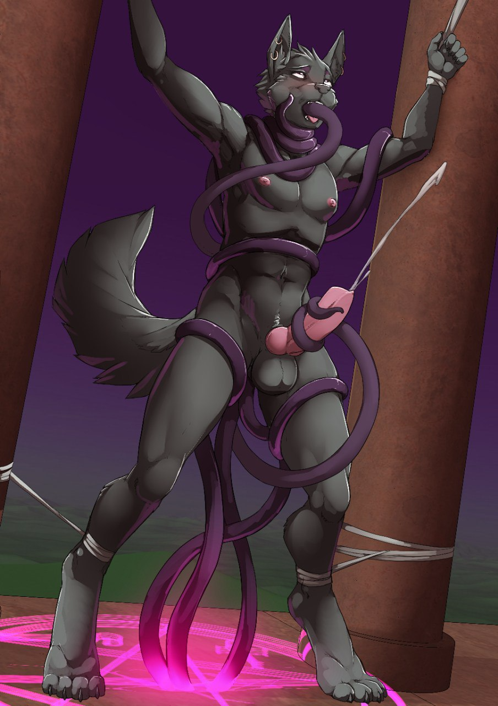

Your Punishment: Ten Tickles
Written by TwistedSnakes
Commissioned by Zephyrius
Illustrated by Twinkle-Sez
The cool breeze weaved its way around the pillars of Kyrie's palace. The air carried with it the cool mist of the waterfalls running down the outer walls of the palace, filling its corridors with the fresh smells from the waters of the River Aur.
In a sitting kneel were two men, one canine and one feline. The canine was an Anubian jackal, covered in a rich coat of black fur except for the tip of his tail, which were a deep shade of purple. He was dressed in a white sleeveless tunic and a matching skirt as he used a goat-haired brush to fill in the charcoal-outlined regions on the wall, depicting a mural of the wheat fields of Kemet. Joining him was a Mau cat in a similar brown tunic, outlining the individual stalks of wheat in gold paint.
"And that's how the top of the pyramid got blasted off," the Zephyrius the jackal finished his story.
"That's intense," the cat nodded smilingly. "If I haven't seen the ruins with my own eyes, I can't say I'd have believed your tale."
Zephyrius grinned back at the palace servant, and they both resumed their painting on the mural.
The cat sighed. "Must be nice being Royal Commander Kyrie's personal slave," he mused with a tinge of envy.
Zephyris blushed back. "It has its perks!" he beamed. "And I'm really honoured to be able to serve Kyrie."
"So do you have to follow her through the day?" the cat probed. "Well, obviously not all the time, seeing that you have time to help me with restoring this mural," he chuckled.
"Yeah, I attend to her a lot, although I get some free time every now and then," Zephyrius smiled. "Take today, for instance, I'm free until Kyrie has to meet the Grand Vizier of Aclaria, which should have started an hour ago..." his face drained at the sudden realization of the trouble he is in.
He hastily threw the paintbrush onto the paint-stained canvas protecting the floor. "Cant talk. Nice talking. Bye Eopeii!" he gasped as he took off down the corridor.
"Bye!" the cat waved to the disappearing jackal. "And thanks for the help!"
"Yes Vizier," a white lioness nodded at the rhinoceros as they walked side by side down the corridor towards to the open door that overlooked the palm-lined river. "Pharoah has approved of the results of our negotiations."
"And when is the earliest that our merchants can begin trading?" the rhinoceros turned to the lioness.
Suddenly, there was a scratching noise of claws against the marble floors of the palace as a black jackal scrambled through a doorway, down the corridor, screeching to a halt behind the lioness as he quickly adjusted his purple and gold robes that looked hastily thrown upon his body. That wasn't too far from the truth though, as Zephyrius had taken less than a minute to get out of his tunic and into his royal slave robes.
He stood behind the lioness' left shoulder and bowed at her, although she didn't seem to have noticed the intrusion. "We will open the gates to your traders in the next lunar quarter. Kemet will benefit greatly from doing business with your thriving economy," she replied without skipping a beat.
The rhinoceros paid no heed to the jackal either. "Very good," he gave a slight bow towards the lioness. "I pray the waters of Aur will lead us to meet again."
The lioness bowed deeper as the rhinoceros went down the steps to board a wooden vessel which was waiting for him. The servants on the ship raised sticks with palm leaves attached at the end to shade the Vizier as he sat down on the reed throne in the middle of the boat. The boat pushed off the palace steps and floated down the Aur.
Once the Vizier disappeared over the horizon, Kyrie turned to the jackal. "Zephyrius mesu Anubis," she said sharply.
"Yes Master?" he acknowledged nervously.
"You know the saying 'Better late than ever'? Well, there are some exceptions to the adage," she said in a soft but firm voice. "You have greatly embarrassed me in front of the Grand Vizier of Aclaria. You know your mistakes. What do you have to say for yourself?"
"I admit my mistakes and there is no excuse," Zephyrius bowed his head in shame. "I will take whatever punishment you have."
There was a moment of silence as Kyrie thought to herself. "I have a punishment in mind, actually," she finally spoke, smirking from the corner of her eyes. "Tickling."
"Ticking, Master?" Zephyrius tilted his head. It was a tame punishment, especially compared to the harsher ones she had put him through before.
"Yes. Five for coming in late, five more for your sloppy attire," she examined the jackal's crumpled robes in disdain. "See that it does not happen again."
"So, ten tickles, Master?" Zephyrius looked at the lioness quizzically. That barely sounded like a punishment.
Kyrie gave a smug smile. "Yeah, that's what I said."
The afternoon sun shone down upon the acacian planks that made up the hull of the boat as it sailed down the River Aur. Its two passengers were seated on the boat, with Kyrie sitting in the reed throne in the middle and Zephyrius steering the boat.
The northern breeze was blowing through Kemet, guiding the boat down the papyrus-plant-filled waters. The sun reflected off the shimmering waters as their boat left a wake that spread out in a cone behind them.
The boat sailed past row after row of houses that overlooked the banks of the River Aur, their marble walls glistening as they were bathed in the warm glow of the sunlight. A set of stairs led from each house down to the riverside where a concrete floor was built just a little higher than the water level. The houses' servants were carrying out their daily tasks by the river, washing their white robes and gathering water in earthen urns.
The river's current brought the pair out of the city centre and into the vast desert of shifting dunes. The three great pyramids rose out of the sandy ground, pointing their golden capstones majestically into the sky.
"We're stopping here," Kyrie nodded calmly.
"Yes, Master," the Zephyrius said meekly. The boat pulled over to the side of the river as the jackal steered it, bringing the boat to rest alongside the muddy banks in a patch of papyrus plants, their stalks leaning over the boat and sheltering the pair from the sun.
Once the boat was secured, Kyrie stepped off the boat onto the sandy ground, and Zephyrius disembarked beside her. With the lioness taking the front and the jackal following behind, the pair made their way towards a dusty stone path that led to a pointed structure in the distance. It was pyramidal in shape, although narrower and steeper than the great pyramids.
As they approached the structure, Zephyrius could see a long flight of stairs in a steep ascent up to its top, where two tall columns stood side by side. His brow furrowed in confusion: this site was a place of concentrated magic, where the sorcerers and diviners of Kemet came to practice their conjuration spells. Definitely not a place for punishing disobedient slaves.
However, he was in no place to question Kyrie's choices, so he followed behind in silence as they reached the ascending steps of the ritual site. Kyrie looked up the steps, slightly annoyed at the arduous ascent that they would have to make. Still, a punishment was a punishment. She took a deep breath and sighed as she took the first step up. After all, a journey of a thousand miles begins with a single step. She smiled to herself. That would be a good adage to add on to the Book of Wisdom.
Fifteen minutes of the laborious climb found a slightly weary lioness and panting jackal. The late-afternoon sun was bearing down heavily on them, shining into squinting eyes as it came level with the top of the ritual site in its descent towards the horizon. A warm breeze swept around them, tugging gently against their robes that flowed out behind them.
The two stone circular columns stood grandly beside each other, each bearing an effigy of a gryphon and sphinx respectively, looking down upon them with eyes of jet-black onyx. Zephyrius looked around in curiosity. Having been trained as a sorcerer in the past, Kyrie would have been familiar with ritual sites such as these, built on grounds where the arcane winds met, forming tide pools of divine energy.
Zephyrius, however, having only trained as a scholar and slave had never seen a place like this before. For a place that was meant to be magical, it seemed oddly empty. Apart from the smooth pillars topped with statuettes and the faint carvings of runes on the alabaster ground, the ritual site was bare.
"Stand here," Kyrie pointed to the ground between the pair of pillars. The jackal complied, although he furrowed his brow in confusion. Was this meant to be part of the punishment? And wasn't it supposed to just be tickles? He opened his mouth to ask, but the stoic look in her eyes changed his mind.
As if to answer his question, Kyrie snapped her fingers. The eyes of the two statues flashed purple for a second and their stone jaws dropped open. Two white cords shot out from their mouths, winding themselves around Zephyrius' wrists and hoisting him upwards.
"Hey!" Zephyrius gasped instinctively, tugging against the thin cords. They looked flimsy but they didn't give as the jackal struggled against them. "Uhh, what's this about?" he asked the lioness apprehensively.
"Shh," Kyrie shushed, gently placing a finger on Zephyrius' lips, calming the nervous jackal with her tender touch. Her other paw lightly caressed his neck, stroking upwards to the underside of his maw, turning his head towards her. The two locked their gazes for an intimate moment, feeling each other's warmth through their fur.
Time seemed to slow down as Zephyrius' breathing became gradual and deep. Despite all the punishments he got from his master Kyrie, she was always just in her judgements. And right now, despite his misconduct, his master still loved him all the same. Her hands slid under the robes around his chest, moving up his broad shoulders to his neck.
Zephyrius let out a soft, contented gasp as he closed his eyes, enjoying the gentle caressing below his purple cloak. He focused on Kyrie' soothing movements, his chest firm against her padded digits as she ran them through his black fur. The jackal tilted his head backwards, shuddering from the sensory overload he was receiving from his master, both physical and mental. Her tender touch was more potent to his senses than the most violent of blows: the result of his mind being attuned to her physical presence, as well as all the emotional associations of past memories with her. Something about her just "is".
Kyrie pulled herself into Zephyrius, resting her cheek against the steady rising and falling of the jackal's slow breaths as she wrapped her arms around him. She nuzzled against the lower cheek of the jackal, and he moved his head in tandem with her movements. The two of them enjoyed the warmth and comfort that each other's being.
After what felt like forever, Kyrie slid her arms up against his back, tugging the jackal's upper robes over his head and tossing them on the stone floor behind him, leaving him topless in the afternoon glare of the sun coming from behind him. He raised one eyebrow at Kyrie's actions, but he didn't say anything.
A soft mumbling escaped from the lioness' lips, and Zephyrius' ears twitched in response. "What did you say?" he finally spoke.
"Arish shirak jhoardis maikaar," she finished as her voice rasped against the rest of the spell's incantations. Zephyrius could see a purple glow emanating from the ground, reflecting off her rounded jawline. What was going on? He tried to look down, but his glance was stopped by a firm finger pressing against his chin, keeping his gaze upon her eyes.
The jackal focused on Kyrie's deep green eyes. Eyes that he had fallen into years ago. Eyes that he still loved till today. Eyes that he could stare into for all eternity, long after not one stone in Kemet was left standing and its glory has faded. Without warning, a wet object slapped against his ankles.
Instinctively, he tried to look down again, but Kyrie's paw gripped his slender jaw, forcing him to keep looking at her. He tried to hold his gaze but his nervousness gripped his heart and his face betrayed his fear. His eyes twitched, jerking involuntarily to look down at the happenings below. A snake-like entity wrapped itself around his foot in a cold slippery grip, and he yanked his leg free of it.
"Master, what's going on?" he asked apprehensively.
Kyrie continued to hold her intense stare, not letting go of his maw despite the jackal's struggles. Such actions were normal, expected even. It was only natural for one to be afraid of things unseen. Zephyrius' feet were moving around the ground, dancing around the tendrils he could not see as he tried to avoid their grasps.
Kyrie heaved a resigned sigh. While her slave could not be faulted for his reactions, he must be further restrained. She snapped her fingers, and two more strong cords wrapped around his ankles, pulling them open towards the two pillars as he stood spread-eagle between them in a vulnerable expression of his toned body.
Zephyrius whimpered in fear as he looked for hints of explanation in Kyrie's eyes but her stoic gaze betrayed nothing. He, however, wasn't in any position to protest. This was his punishment after all, and he trusted that she would be fair. But he didn't know what was going on, and the lack of knowledge was a fear that gripped his mind. Against his better judgement, he whispered, "Help. Please."
Kyrie shook her head and pressed one finger against his lips: a final warning to remain silent. Now helpless to move his feet, he found his legs slowly being wrapped by slimy tendrils. They snaked the way up his legs, encircling his thighs. Almost like... "Tentacles!" he thought, a look of recognition and shock flashing across his face. Noticing his expression, Kyrie returned a sly smirk, confirming his suspicions. He hurriedly pulled his head out of the lioness' grasp and looked down to see his assumptions confirmed: purple tentacles were emerging from a glowing purple ritual circle on the ground, flailing their snake-like bodies in the air, attempting to find objects to wrap their long bodies around.
Ugh. He hated tentacles! The way they writhed about like snakes, probing one's body in places too private for the touch of others. This wasn't in the punishment description! He squirmed in protest, showing displeasure for the undeserved predicament that his master had subjected him to. Yes, he was supposed to be punished. But the punishment wasn't tentacles. It was supposed to be ten tickles! Wait... Realization hit him like a sledgehammer, and he glared at Kyrie.
He didn't dare to speak after her wordless warning so he continued scowling at her. The lioness, however, was unfazed, returning his expression with a smirk of his own. He grunted in frustration, feeling the tentacles move up his body, wrapping around his abs. Some of them were poking at his crotch, threatening to swarm over his privates. His lower robes, however, kept them at bay. That much he was thankful for.
His blessing was short-lived, however, as Kyrie had pulled her arms around the jackal's waist in a hug, slowly untying the knot of cloth that kept his robes together. "Nghn..." he groaned in frustration and desperation. He didn't want this. The robes fell away, leaving him stark naked except for an ornamental metal cage that encased his manhood. With another snap of the lioness' fingers, the cage opened up and fell with a clanging noise onto the ground, releasing the jackal's pink, soft, cock. Kyrie pressed a paw against his dick, slowly massaging and coaxing his member out.
Zephyrius gasped again, feeling himself getting turned on against his will despite the impending quagmire he was soon going to face. His pink member slowly pushed its way out of its sheath, pointing outwards away from his body. Kyrie didn't stop, slowly stroking and squeezing it with firm, graceful movements. His dick was soon fully erect, twitching in expectation for more of Kyrie's attention.
Just then, a lone tentacle had found his tailhole and nudged itself against its opening. The jackal yelped softly in surprise, and he squeezed his sphincter in an attempt to keep it out. The tentacle wasn't so easily deterred, and it pressed harder against the jackal's anus, slowly edging its tapered end against the hole.
Zephyrius squeezed harder but his strength was no match for the slippery intrusion that threatened to defile his anus with its writhing body. He thrust his hips forward, trying to escape the tentacle as he pushed his cock into Kyrie's massaging paws, and the lioness happily complied, continuing her strokes until his throbbing member was shaking from his eagerness.
The tentacle ignored his movements of protest, instead pushing its way up into the clenched opening, widening it with its purple shaft. Zephyrius gasped as a wave of euphoria washed over him, and he shuddered. He blushed in embarrassment: this was demeaning. A slave of the Royal Commander Kyrie being stimulated by disgusting tentacles.
While he moaned viscerally another tentacle snaked its way up around his chest and back. "Ngaah-mfft!" he gasped, as the tentacle filled his maw, forcing it wide open with its thick, pulsating shaft. It thrust in and out as if forcing him to give fellatio to a prehensile penis belonging to someone else. His moans were reduced to muffled murmurings from behind his tentacle gag as he tried unsuccessfully to pull himself away from it.
He convulsed against the cords binding him to the pillars, trying to escape while Kyrie stood back to watch with her arms crossed. She held back a grin as she watched her slave struggle. While it brought her pleasure to see her slave reap the consequences of his misdemeanours, this punishment wasn't about her; it was in the grand scheme of the universe. Trespasses should be punished; anything else would only encourage bad behaviour, and this incident was no exception.
Zephyrius was now being spit-roasted by tentacles, one thrusting itself up and down his tight ass, forcing it wide open, and the other one gagging him, poking itself down his throat and half-choking him. Other tentacles had embraced his body in coils, squeezing his muscular body with their long arms. He had stopped struggling as his mind was focusing on the feeling of cold tentacles in both his ends, plugging him up.

The tentacle in his tailhole was writhing about, feeling the walls of his ass and nudging gently against his prostate. With his maw filled, he moaned under his breath as he thrust his hips in time with the tentacles. His libido was starting to stir within him: a fuzzy feeling in his brain that clouded out all other thoughts.
He just needed to cum. Such a simple request. Was that too much to ask for? As if to answer his question, a tentacle unwrapped itself from his thigh, rose up and coiled itself around the base of his shaft, giving it a squeeze.
Zephyrius shuddered and moaned in pleasure. "Just...just stroke it..." he thought to himself. He rocked his hips back and forth, slowly sliding his shaft along the slippery coil. As the tentacle reached the head of his cock, the tip of the wriggling tentacle touched his sensitive shaft in soft strokes. He whimpered helplessly as bliss filled his thoughts as the tentacle in his mouth squirmed. He didn't just want this; he needed this badly.
The tentacle in his tailhole had begun thrusting in and out in strong strokes, each time filling him up and pressing against his prostate before pulling out and leaving his gaping hole open. Zephyrius was also rocking his hips in tandem, gratifying his carnal desires with his helpless fucking of the tentacle coil around his shaft. He was getting close.
Suddenly, a thought crossed his mind: Kyrie. He couldn't cum without her permission. He looked to pleadingly at the watching lioness, who nodded calmly. He sighed in relief and continued his fervent thrusting. He could do it. He needed this. Just a bit more...
There was a burst of white as the horny jackal shot his seed across the alabaster floor. As if the tentacles recognized his release, they slid out of his orifices and retracted into the ritual circle, waving their tips unthreateningly in the air. Now able to breathe properly, Zephyrius gasped for air, trying to recover from his sexual encounter.
The sun was already beginning to set, casting the sky in a purple glow. The lioness walked over to Zephyrius and looked him in the eye. He returned the gaze back, with a sorry look on his face, but Kyrie maintained her blank expression. Surely after the punishment she'd forgive him, right? However, the lioness merely raised a paw, extending one finger to his chin.
She wriggled the finger, lightly ticking the jackal and making him grin. "One tickle," she said, before walking away.
"Huh?" Zephyrius wondered out loud, just as the tentacles raised themselves up to full length again, ready to resume their onslaught on his insides. "Oh no no no no-mawrft!" he choked on the tentacles again as Kyrie stood back to observe the next round of tenticular assault.
There was a soft whimpering sound in the darkness of the bedroom. In a king-sized bed laid a lioness and a jackal. Both of them were dressed in white sleeping robes that seemed almost luminescent under the soft light of a few candles that sat in candlesticks sparsely distributed around the room. Sticks of incense were burning, filling it with a soft scent of lavender mixed with hints of cedar.
Despite his physical fatigue, Zephyrius couldn't sleep. His ordeal at the ritual site had left him quite mentally scarred. As promised, his master had subjected him to ten tickles, each one earned through an orgasm achieved through an unpleasant trial by tentacles. While the first few rounds felt good, by the fourth or fifth round, the poor jackal felt like his balls were completely drained dry. However, half-an-hour into each cycle, his exhausted member would painfully harden again, enduring more and more teasing on his sensitive member, made even more so by the repeated rounds of cumming.
His cock got sore beyond belief, and by the time he was on his last round, he felt like his dick was going to burst. Still, he gritted his teeth and endured, completing the last of his punishment. After his tenth tickle, his softened member was sealed and locked in the same decorated chastity device. He was whimpering as the metal cage snapped into place around his throbbing cock, feeling a mixture of relief that he could no longer be subjected to tentacle rape, as well as slight disappointment that his ten releases meant that he'd be locked up without respite for much longer.
Not that this was something he wasn't already used to though. Coupled with the fact that he was forced to orgasm ten times that day, he was looking forward to a break from sexual stimulation. In fact, this would have been the case tonight except for the fact that Kyrie's usage of magic in the day had given her the itch to practice more. She had enchanted Zephyrius' cock cage with some of her magic, making it give sensations of vibrations, stroking and fellatio throughout the night.
Despite his sexual exhaustion, the jackal was once again stimulated. This time, however, his dick had nowhere to extend to, instead painfully pressing against the sides of the metal prison. He whimpered a little as he tried to squeeze his dick through the metal, but to no avail; the emotionless cage was unyielding to his attempts to alleviate his erotic frustration. He whined softly again, cursing his futile actions, before looking at Kyrie cautiously. Waking her up would summon her wrath once again, and after today, he wanted to stay clear of any form of punishments from her.
Suddenly, Zephyrius could feel a surge of vibrations coming from his chastity cage. He impulsively bent over with two hands on his metal member, squeezing hard on it as if it would cool his rising libido.
Under his breath, the jackal muttered, "Hnng...fuck."
His punishment came almost immediately from the lioness lying body. "One tickle."
~ End ~